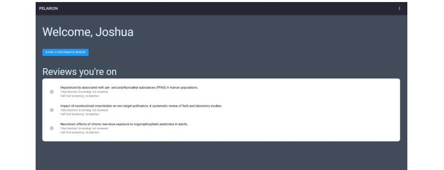
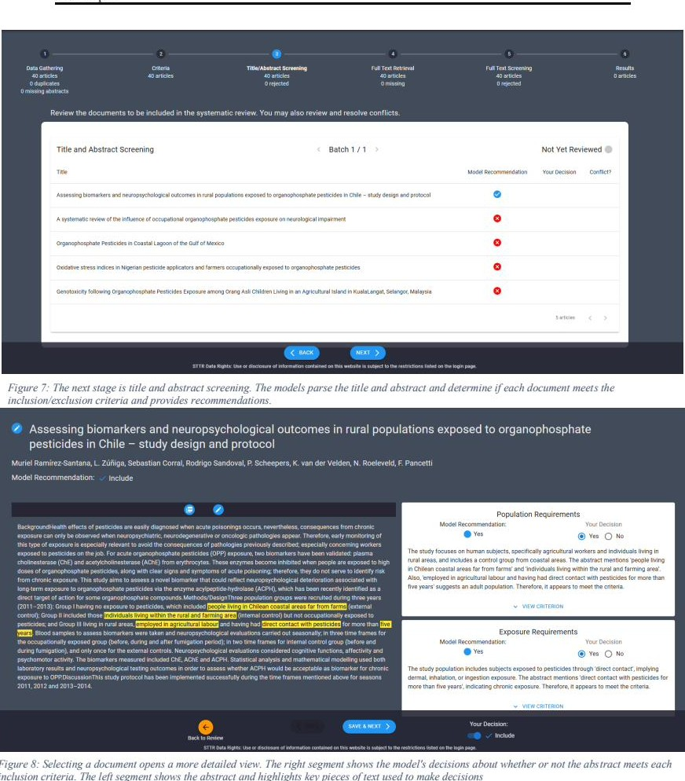
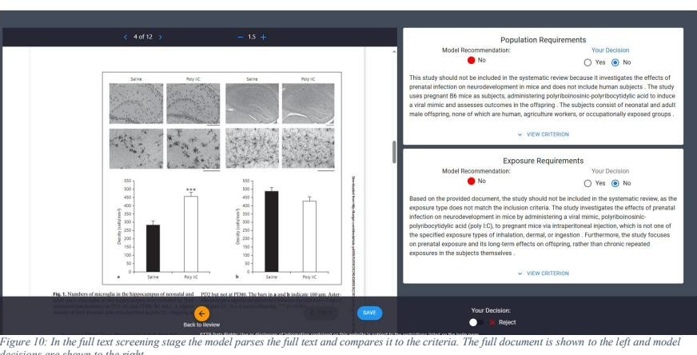
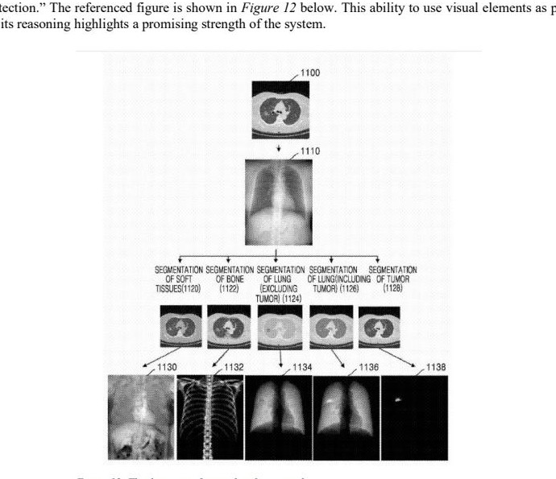

Why grey literature screening matters
Systematic Reviews (SRs) are the cornerstone of evidence-based chemical risk assessment at the EPA. But their conclusions are only as sound as the literature they include. Grey literature — government reports, technical documents, theses, and conference proceedings — is routinely underrepresented, introducing publication bias that skews risk assessments and delays regulatory action.
The consequences are real. In the EPA's assessment of perchloroethylene (PCE), SR delays drove widespread substitution with n-propylbromide, a chemical later found to carry even greater health risks. In assessments of carbon tetrachloride, the EPA and international agencies reached opposite conclusions partly because grey and biological literature was excluded from one analysis.
Grey literature's barriers are structural: no standardized metadata, no consistent indexing, dispersed sources, and link decay that turns retrieval into a manual, error-prone process. SR teams fall back on spreadsheets for dual screening, which is slow, non-scalable, and non-reproducible. Pelarion was built to close this gap.
All Phase II technical objectives met
| Objective | Status | Milestone |
|---|---|---|
| TO 1 — Finalize R&D Plan | Complete | Kickoff with partners; R&D timeline drafted. |
| SD TO 1 — Data Gathering | Complete | Semantic Scholar API integrated for live database search. |
| SD TO 2 — Design Web App | Complete | Figma wireframes refined iteratively with SME partners. |
| SD TO 3 — Build Web App | Complete | Application deployed and internally tested for stability. |
| SD TO 4 — Alpha Testing | Complete | Testing with SME partners and Johns Hopkins University students. |
| DS TO 1 — Gather Data | Complete | Expanded validation corpus developed with partners. |
| DS TO 2 — Improve ML Pipeline | Complete | Gemini Flash 2.5 integrated; 80% recall and 86% precision achieved. |
Data science and system architecture
The platform accepts PDFs, Office documents (converted to PDF), and web-scraped HTML. The pipeline runs three sequential stages before any model sees a document.
Abstract Screening: Two-Stage Ranking
Abstracts are ranked by blending fast lexical signals with a learned classifier. BM25 provides a transparent first pass, scoring how often criterion terms appear in each abstract, how rare those terms are across the collection, and normalizing for document length. In parallel, TF-IDF vectors over unigrams and bigrams feed a Random Forest classifier trained on reviewer decisions accumulated during the current review, with XGBoost available as an alternative. Hyperparameters are tuned via Bayesian optimization (Optuna) using F1 as the objective.
In head-to-head testing, this approach matched a BERT embedding paired with a neural network classifier — at a fraction of the compute, latency, and maintenance overhead.
Full-Text Screening: Structured LLM Prompting
Full-text screening drives Gemini Flash with criteria-aware templated prompts. The model returns a strict JSON schema: for each inclusion criterion it produces a label (yes / no / maybe) plus a short rationale. The three-way label was a deliberate choice: during prompt engineering, allowing "maybe" measurably reduced hallucinated citations compared to a binary yes/no scheme. Page citations are emitted as XML tags — <page:X> or <page:X-Y> — and parsed immediately so every claim links to its source location.
Django + DRF
Versioned, JWT-secured REST API. Celery workers on RabbitMQ handle all compute-heavy tasks asynchronously. PostgreSQL for transactional data; Azure Blob Storage for PDFs.
React 18 + Vite
Redux Toolkit state management. Material UI with Emotion. Real-time progress via Server-Sent Events (SSE). Full-text review with react-pdf-viewer and pdfjs-dist.
BM25 · TF-IDF · Random Forest
Bayesian hyperparameter optimization via Optuna. Calibrated inclusion probabilities. Matched BERT + neural network baseline at lower cost and latency.
Gemini Flash 2.5 · Cohere
Structured JSON output with per-criterion rationales. XML page citation tags parsed in real time. Conservative flag logic: any NO criterion excludes the article.
Additional Feasibility Work
Custom metadata extraction lets users define arbitrary fields (name, type, description, example) that an LLM extracts from each document for downstream filtering. Tested on 32 biomedical articles targeting population size and characteristics, the system achieved 96.77% accuracy on population size — including cases that required summing across table cells — and 100% on population characteristics. The single error arose when the source article was a synthesis and the model pulled figures from a referenced study rather than noting that no standalone population existed.
Grey literature search planning reads YAML configurations and uses an OpenAI model to draft topic-specific search strategies, including recommended databases, search strings, and retrieval tips. An execution companion then translates those plans into DuckDuckGo queries to collect candidate sources, logging each configuration for reproducibility.
A task-oriented workspace for high-volume review
Pelarion guides reviewers through six locked stages — Data Gathering, Criteria, Title/Abstract Screening, Full Text Retrieval, Full Text Screening, and Results — displayed as a progress bar at the top of every screen. Criteria and document lists are locked before screening begins, following SR protocol to prevent bias from influencing decisions.

Data gathering supports three entry paths: direct PDF or ZIP upload (including Zotero exports), live search against Semantic Scholar with date-range filtering, and a "Your Articles" view that surfaces duplicates and abstracts that could not be automatically extracted. Users control the de-duplication step, choosing which records to retain.

The batch size setting controls how frequently the Random Forest ranking model retrains during abstract screening. Smaller batches trigger more frequent updates on less data, producing gradual ranking shifts. Larger batches produce more pronounced improvements between iterations. After every batch the model is retrained on accumulated reviewer decisions, progressively improving the relevance of documents surfaced in future batches.

Screening performance and domain generalization
Results were validated across a dataset mixing grey literature and academic literature, with some documents exceeding several hundred pages. Despite non-standard grey literature formatting, Pelarion correctly screened documents for relevance to provided criteria and surfaced criterion-level rationales and page anchors for reviewer verification.
Patent screening generalization
Following interest from IP.com, VISIMO ran the pipeline against a patent dataset to assess domain generalizability. Abstract screening proved unreliable — patent abstracts are often a single sentence, too brief for the model to extract useful relevance signals. When abstracts were bypassed and all patents advanced directly to full-text screening, the model performed strongly across patents ranging from 17 to 303 pages. Notably, it cited figures and diagrams as supporting evidence — a promising multimodal capability.

Near-term adaptations for the patent domain include updated filtering logic (match any criterion rather than all), removal or replacement of abstract screening with lightweight full-text heuristics, domain vocabulary alignment, and evaluation metrics tuned to patent review workflows.
Discovery across four countries, twelve conversations
Interviews were conducted with librarians, evidence centers, academics, public health researchers, competitive intelligence teams, and content providers in the United States, United Kingdom, France, and Canada. Participants consistently described SRs as high-volume, labor-intensive, and sensitive to missed evidence. One evidence center reported workstreams reaching 50,000 items per review.
Top feature requests
PRISMA diagram generation, automated de-duplication and citation tracking, integration with Zotero / Elicit / ResearchRabbit / SciSpace / Mendeley, explainable AI decisions with external validation, accurate full-text retrieval, and flexible filters (study type, citation count, sample size). Batch summarization of large document sets was also frequently requested.
Commercialization path
Priority targets span pharma and biotech evidence centers, medical affairs teams, contract research organizations, Health Economics and Outcomes Research agencies, patent analytics firms, and health insurers evaluating coverage policies. The recommended go-to-market sequence: formalize a grey literature content partnership pilot, launch a limited freemium beta with PRISMA and exportable evidence logs, secure an independent validation study, then expand into patent-centric workflows with IP.com.